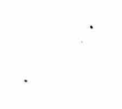

**Computer System Overview**
1. **Computer Components**
- **Memory**: - **Address**: Units of memory are bytes, and the address of each memory unit is represented in binary. - **Byte**: Consists of 8 bits. The size of a byte varies between different computers. - **Word Length**: The number of bits that the CPU can process at once. It depends on the number of bits in the general-purpose registers and the data bus width. - **Word**: A word is a group of bits that can be processed as a unit. The size of a word is determined by the word length. - **Little Endian**: The least significant byte is stored at the lowest address. - **Big Endian**: The most significant byte is stored at the lowest address. - **Two's Complement**: A method of representing signed numbers in binary.
- **Arithmetic Logic Unit (ALU)**: Performs arithmetic and logical operations. - **Data Bus**: The path through which data is transferred between the CPU and other components. - **Controller**: - **Basic Components**: - **Operation Controller (OC)**: Controls the operation of the CPU. - **Instruction Register (IR)**: Stores the instruction currently being executed. - **Program Counter (PC)**: Points to the next instruction to be executed. - **Memory Address Register (MAR)**: Stores the address of the memory location to be accessed. - **Memory Data Register (MDR)**: Stores the data to be read from or written to memory.
2. **Computer System**
- **Hardware**: The physical components and devices required by the computer. - **Software**: Programs that control the computer and manage its resources. - **Machine Language**: The lowest level of computer language, consisting of binary instructions. - **Assembly Language**: A low-level programming language that uses mnemonics to represent machine instructions. - **Compiler**: Converts high-level language code into machine code. - **Interpreter**: Translates and executes high-level language code line by line. - **High-Level Languages**: Languages that are easier for humans to read and write, but require compilation or interpretation to run on a machine.
3. **Computer Performance Evaluation**
- **Response Time**: The time from when a request is made to when the result is returned. - **Throughput**: The amount of work done per unit of time. - **CPU Execution Time**: The time required to execute a specific program. - **CP1**: The clock cycle of the CPU.
**Page 2**
**1. Overview**
Instruction: A command that specifies the operation a computer performs. Instruction set/Instruction set architecture (ISA): All instructions. Instruction set architecture (ISA): Memory structure, memory organization and addressing modes, I/O structure, data types and representation, instruction set, Interrupt mechanism, machine state definition and switching, Protection mechanism → compiler or interpreter visible. Backward compatibility: low; forward compatibility: high.
**2. ISA**
1. Stack model: Polish. Stack in memory: Push/pop: 2 ALU: 3 Stack in register: Push/pop: 1 ALU: 0.
2. Load/store model: ALU: 1
3. Register-register model: MOV/ALU: 1 ALU: 0.
4. Register-memory model: Load/store: 1 ALU: 0. (Store-load model): RISC.
**3. Basic Instruction Set**
1. Data transfer instructions: 2. ALU instructions: 3. Control instructions: Program control and jump, interrupt, loop, branch, etc. 4. I/O
**4. Computer Memory Representation**
Machine number: Used within the machine, including signed and unsigned values. Original code: -(2^(n-1)-1) ~ 2^(n-1)-1 Complement code: -(2^(n-1)-1) ~ 2^(n-1)-1 Two's complement: -2^(n-1) ~ 2^(n-1)-1 Modulus: Base n digits. Overflow: Addition and subtraction: No overflow rule x Underflow: Same addition and subtraction: No overflow rule x. Floating-point representation: Exponent bias (+2^(k-1)-1). Range of exponents: ±[1+(1-2^m)] x 2^(2^(k-1)-2^(k-1)-1) Precision of exponents: ±[1+(1-2^m)] x 2^(2^(k-1)-2^(k-1)-1)
4. Addressing Modes Formal Address: Instruction Address Effective Address EA: Formal Address + Physical Address
III. Instruction Format Design 1. Instruction Code Encoding Bit Width: H = -2^P * log_2 P Remainder: R = 1 + H / Average Instruction Length ① Fixed Length: log_2 n ② Huffman: Variable Length ③ Extension: Fixed Length Prefix
2. Address Code Encoding ① Register Address: Instruction Register ② Register-to-Register Address: Register-to-Register
3. Address Code and Instruction Code Combination Instruction Code Extension Encoding Method
4. CISC vs RISC CISC: Complex Instruction Set Computer: Instructions RISC: Reduced Instruction Set Computer: CP1
ALU Design 1. ALU Overview 2. Adder 3. Shifter MSB determines arithmetic/logical/circular shift ① 2-1 MUX: 0/1 - 0/2 - 0/4 ... ② 4-1 MUX: 0/4/8/12 - 0/1/2/3 ... ③ Funnel: Left: Left Funnel; Right: Right Funnel; Control: Select ④ Barrel: Left: Left Barrel; Right: Right Barrel; Control: Select
4. Adder ① Ripple Carry Adder RCA: 2T/2n ② Carry Lookahead Adder CLA: 1) Carry Generation: g_i = a_i * b_i 2) Carry Propagation: p_i = a_i ⊕ b_i 3) Carry Propagation: c_i = g_i + p_i * c_i = g_i + g_{i-1} * p_i + ... + c_{i-1} * p_{i-1} 4) Sum: s_i = a_i ⊕ b_i ⊕ c_i = p_i ⊕ c_i ③ Inter-Stage Carry Propagation Adder: 3T/2n ④ Inter-Stage Carry Propagation Adder: Carry Pipeline 1) Inter-Stage Carry Generation: g_i = a_i * b_i 2) Inter-Stage Carry Propagation: p_i = g_i + p_{i-1} * c_{i-1} 3) Inter-Stage Carry Propagation: c_i = g_i + p_i * c_i = g_i + g_{i-1} * p_i + ... + c_{i-1} * p_{i-1} 4) Sum: s_i = a_i ⊕ b_i ⊕ c_i = p_i ⊕ c_i
Subtractor: a - b = a + b + 1; c = 1
**Data Path Design**
1. **Basic Concepts**
- **Main System:** Memory, ALU, Controller. - **CPU:** Processor, Controller. - **Data Path:** CPU's internal component information transmission path. - **Data Path (Wide):** CPU, Memory, I/O Devices... - **Data Path Components:** CPU's internal wiring, auxiliary registers. - **Data Path Structure:** Bus / Special Path.
**Controller Design**
1. **Controller Overview**
- **Controller's Main Functions:** - Fetch instruction, calculate address. - Decode instruction, generate control signals. - Control execution sequence, control data flow direction. - Handle exceptions. - **Controller Structure:** - Control signals: (instruction, memory, etc.). - Instruction Cycle: Instruction fetch to completion time. - Machine Cycle: Instruction cycle time. - Clock Cycle: The time unit of the machine cycle. - Timing Control Unit: A cycle of one machine cycle. - **Hardwired Controller:** - Fast (combinational logic), complex; can implement new instructions. - Slow; flexible, can implement new instructions. - Machine instruction → Fetch instruction → Execute instruction → Store instruction.
**Instruction-Level Parallel Processing (ILP)**
1. **Instruction-Level Parallel Processing Overview**
- **Pipeline:** Instruction decomposition pipeline. - **Superscalar:** Instruction-level parallelism. - **Superinstructions:** Multicycle instructions VLIW.
2. **Pipeline Basic Concepts**
- **Fetch, Decode, Execute, Store, Return.** - **Bottleneck:** Pipeline stages with longer execution times. - **Insert Time:** The time required for the first task to be inserted. - **Bottleneck Time:** The time required for the last task to be inserted.
3. **Pipeline Performance Metrics:**
- **Throughput:** Number of instructions per unit time. $$ TP = \frac{n}{(k+n-1) \Delta t} $$ $$ TP_{max} = \frac{1}{\Delta t} $$ $$ TP = \frac{n}{\sum_{i=1}^{n} \Delta t_i + (n-1) \max \{\Delta t_i\}} $$ $$ TP_{max} = \frac{1}{\max \{\Delta t_i\}} $$ - **Speedup:** Instruction execution time / Pipeline execution time. $$ S = \frac{k \cdot n \cdot \Delta t}{(k+n-1) \Delta t} = \frac{k \cdot n}{k+n-1} $$ $$ S_{max} = \frac{k}{k+n-1} $$ $$ S = \frac{n \cdot \sum_{i=1}^{n} \Delta t_i}{\sum_{i=1}^{n} \Delta t_i + (n-1) \max \{\Delta t_i\}} $$ $$ S_{max} = \frac{\sum_{i=1}^{n} \Delta t_i}{\max \{\Delta t_i\}} $$ - **Efficiency:** Task time area / Total time area. $$ E = \frac{k \cdot n \cdot \Delta t}{k \cdot (k+n-1) \Delta t} = \frac{n}{k+n-1} $$ $$ E_{max} = 1 $$ $$ E = \frac{n \cdot \sum_{i=1}^{n} \Delta t_i}{k \cdot (k+n-1) \Delta t} = \frac{n}{k+n-1} $$ $$ E_{max} = \frac{\sum_{i=1}^{n} \Delta t_i}{\max \{\Delta t_i\}} $$
**4. Pipeline冒险问题.**
1. **结构冒险（资源冒险）**
- **现象:** 多指令访问同部件 - **解决:** 增加运算部件、用哈佛...
2. **数据冒险（数据相关）**
- **现象:** 多指令访问数据: RAW、WAR、WAW(多路) - **解决:** 1) 编译检测: 编译时遇到冒险加nop. - **3. 冒险专用通路:** 前传停路, 不影响流水. - **4. 指令调度:** 寄存器重命名流WAR、WAW.
3. **控制冒险**
- **现象:** 转移指令引起冒险&转移前条件码冒险 - **解决:** 转移延迟槽、分支预测...
**八. 存储系统(1).**
1. **基本概念**
- **访问时间TA:** 申请→读出. - **存储周期Tm:** 访问→访问. - **带宽Bm:** 数据总线宽度(Bits)/Tm. - **SRAM:** 快、贵. - **DRAM:** 慢、密、廉. - **局部性原理:**
- **时间局部性:** <循环. - **空间局部性:** <顺序执行; 数据聚集存放. - **存储系统层次结构:** 根据局部性原理. - **命中:** 在本层; 缺失: 在下层; 命中率H.
2. **Cache技术**
- **Cache:** 小而快的存储器, 保存内存数据最近副本. - **直接映射Cache:** 自动调整Cache中指令数据比 - **哈佛Cache:** load和store同时执行. - **Cache的基本结构:** Cache存储体、地址映射变换机构、Cache替换机构. - **1. Cache和主存的地址格式**
- **主存:** m位块号, b位块内地址, 共mtb位.
- **Cache:** c位行号, b位行内地址, c - **数据区:** 存Cache行的数据.
- **标签:** 指明Cache行和主存块的对应关系.
- **有效位:** 行是否有效.
- **Cache目录容量 = (标签位数+有效位数)×2^b位数.** 3. **地址映射与变换** - **1. 直接映射:** 命中率低, 利用率低.
- **主存地址:** 标签 Cache行号 块内地址
- **主存块号:** 标签 Cache行号 块内地址
- **2. 全相联映射:** 命中率高, 利用率高, 代价高.
- **主存地址:** 标签 块号 块内地址
- **主存块号:** 标签 块号 块内地址
4. Replacement Strategy: When new data needs to be written into Cache, if there is an empty line, write it into the empty line. Otherwise, replace a line. 1) FIFO: First In, First Out. Not based on locality principle. 2) LRU: Least Recently Used. More reasonable than FIFO. Each Cache line has a counter. When replaced, choose the line with the highest counter. Load/replace line counter to 0. Other lines +1. If a line is hit, its counter is 0. If not hit, the line is +1. If not hit, the line is +10. 3) Random.
5. Writeback Strategy: When CPU accesses Cache and hits, writeback strategy. 1) Writeback: Write to Cache and write to memory. Writeback; replacement does not write to memory; lower speed. 2) Writeback with buffer: Writeback data is written to write buffer. Does not affect CPU speed. Write buffer is flushed to memory. 3) Writeback: Writeback line is marked dirty but not written back to memory until the line is replaced. Reduces writeback time; line is inconsistent with Cache before replacement. 4) Writeback: Writeback line is marked dirty and Cache line is invalidated. Not flushed; until replaced.
6. Allocation Strategy: CPU accesses Cache and misses. The writeback strategy. 1) Writeback: If there is an empty line, write and mark as dirty. If no empty line, use replacement strategy to replace the line and mark as dirty. Writeback is shared. 2) Writeback without allocation: Writeback, do not write to Cache. Generally used for writeback.
7. Storage System (2): 1. Storage Management Overview. 2. Segmentation Management. Segmentation: Divide memory into a series of fixed-length blocks, each segment occupying a block. Segment Table: Provides the base address of the segment in memory. Each entry is a base address and length. Logical Address: Segment selection tag + segment offset. Physical Address: [Segment base address + segment selection tag] + segment offset. Segmentation Fragmentation: Fragmentation between segments. The operating system can reduce fragmentation by merging segments in memory into a large contiguous area.
3. Page Frame Management - **Page Table**: - **Page Frame**: Each page is a fixed-size block of memory. - **Page Table Entry**: Contains the physical page number and a valid bit. - **Page Frame Address**: Logical page number + page offset. - **Physical Address**: [Page Table Base + Logical Page Number] + Page Offset. - **Page Frame Size**: Fixed size of page frames. - **Advantages**: High memory utilization, fast page switching, simple page management. - **Disadvantages**: Poor modularity of program storage; page table > segment table.
- **Page Table Management**: - **Page Table Entry**: Valid bit; dirty bit. - **Page Table Management**: Page content is written to disk. - **Page Table Entry**: Valid bit 1: Page content is written to disk. - **Page Table Entry**: Valid bit 0: Page content is written to disk. - **Page Table Entry**: Valid bit 1: Page content is written to disk. - **Page Table Entry**: Valid bit 0: Page content is written to disk.
4. Virtual Memory (Page Management) - **Page Frame Management**: - **Page Frame**: Each page is a fixed-size block of memory. - **Page Table Entry**: Contains the physical page number and a valid bit. - **Page Frame Address**: Logical page number + page offset. - **Physical Address**: [Page Table Base + Logical Page Number] + Page Offset. - **Page Frame Size**: Fixed size of page frames. - **Advantages**: High memory utilization, fast page switching, simple page management. - **Disadvantages**: Poor modularity of program storage; page table > segment table.
- **Page Table Management**: - **Page Table Entry**: Valid bit; dirty bit. - **Page Table Management**: Page content is written to disk. - **Page Table Entry**: Valid bit 1: Page content is written to disk. - **Page Table Entry**: Valid bit 0: Page content is written to disk. - **Page Table Entry**: Valid bit 1: Page content is written to disk. - **Page Table Entry**: Valid bit 0: Page content is written to disk.
- **Page Table Management**: - **Page Table Entry**: Valid bit; dirty bit. - **Page Table Management**: Page content is written to disk. - **Page Table Entry**: Valid bit 1: Page content is written to disk. - **Page Table Entry**: Valid bit 0: Page content is written to disk. - **Page Table Entry**: Valid bit 1: Page content is written to disk. - **Page Table Entry**: Valid bit 0: Page content is written to disk.
- **Page Table Management**: - **Page Table Entry**: Valid bit; dirty bit. - **Page Table Management**: Page content is written to disk. - **Page Table Entry**: Valid bit 1: Page content is written to disk. - **Page Table Entry**: Valid bit 0: Page content is written to disk. - **Page Table Entry**: Valid bit 1: Page content is written to disk. - **Page Table Entry**: Valid bit 0: Page content is written to disk.
- **Page Table Management**: - **Page Table Entry**: Valid bit; dirty bit. - **Page Table Management**: Page content is written to disk. - **Page Table Entry**: Valid bit 1: Page content is written to disk. - **Page Table Entry**: Valid bit 0: Page content is written to disk. - **Page Table Entry**: Valid bit 1: Page content is written to disk. - **Page Table Entry**: Valid bit 0: Page content is written to disk.
- **Page Table Management**: - **Page Table Entry**: Valid bit; dirty bit. - **Page Table Management**: Page content is written to disk. - **Page Table Entry**: Valid bit 1: Page content is written to disk. - **Page Table Entry**: Valid bit 0: Page content is written to disk. - **Page Table Entry**: Valid bit 1: Page content is written to disk. - **Page Table Entry**: Valid bit 0: Page content is written to disk.
- **Page Table Management**: - **Page Table Entry**: Valid bit; dirty bit. - **Page Table Management**: Page content is written to disk. - **Page Table Entry**: Valid bit 1: Page content is written to disk. - **Page Table Entry**: Valid bit 0: Page content is written to disk. - **Page Table Entry**: Valid bit 1: Page content is written to disk. - **Page Table Entry**: Valid bit 0: Page content is written to disk.
- **Page Table Management**: - **Page Table Entry**: Valid bit; dirty bit. - **Page Table Management**: Page content is written to disk. - **Page Table Entry**: Valid bit 1: Page content is written to disk. - **Page Table Entry**: Valid bit 0: Page content is written to disk. - **Page Table Entry**: Valid bit 1: Page content is written to disk. - **Page Table Entry**: Valid bit 0: Page content is written to disk.
- **Page Table Management**: - **Page Table Entry**: Valid bit; dirty bit. - **Page Table Management**: Page content is written to disk. - **Page Table Entry**: Valid bit 1: Page content is written to disk. - **Page Table Entry**: Valid bit 0: Page content is written to disk. - **Page Table Entry**: Valid bit 1: Page content is written to disk. - **Page Table Entry**: Valid bit 0: Page content is written to disk.
- **Page Table Management**: - **Page Table Entry**: Valid bit; dirty bit. - **Page Table Management**: Page content is written to disk. - **Page Table Entry**: Valid bit 1: Page content is written to disk. - **Page Table Entry**: Valid bit 0: Page content is written to disk. - **Page Table Entry**: Valid bit 1: Page content is written to disk. - **Page Table Entry**: Valid bit 0: Page content is written to disk.
- **Page Table Management**: - **Page Table Entry**: Valid bit; dirty bit. - **Page Table Management**: Page content is written to disk. - **Page Table Entry**: Valid bit 1: Page content is written to disk. - **Page Table Entry**: Valid bit 0: Page content is written to disk. - **Page Table Entry**: Valid bit 1: Page content is written to disk. - **Page Table Entry**: Valid bit 0: Page content is written to disk.
- **Page Table Management**: - **Page Table Entry**: Valid bit; dirty bit. - **Page Table Management**: Page content
The note appears to be a detailed explanation of computer architecture concepts, specifically focusing on memory management and processor registers. Here's a summary of the content:
1. **Cache and Memory Hierarchy**: - Discusses the interaction between CPU, Cache, and Memory Management Unit (MMU). - Describes two scenarios: when Cache is before MMU and when Cache is after MMU. - Explains the advantages and disadvantages of each scenario.
2. **Processor Registers**: - Lists various registers and their functions: - AX: General-purpose register - BX: Base register - CX: Count register - DX: Data register - SP: Stack pointer - BP: Base pointer - SI: Source index - DI: Destination index - Flags Register: - CF: Carry flag - PF: Parity flag - AF: Auxiliary flag - SF: Sign flag - ZF: Zero flag - DF: Direction flag - IF: Interrupt flag - TF: Trap flag - DF: Direction flag - IF: Interrupt flag - DF: Direction flag - IF: Interrupt flag
3. **Memory Addressing**: - Explains the difference between logical and physical addresses. - Describes how to convert logical addresses to physical addresses. - Discusses the concept of base and offset in memory addressing.
4. **Interrupt Handling**: - Describes the interrupt vector table and how interrupts are handled. - Explains the process of interrupt handling and the role of the interrupt controller.
5. **Memory Management**: - Discusses the concept of virtual memory and how it is managed by the operating system. - Explains how the operating system handles memory allocation and deallocation.
6. **Programmable I/O Ports**: - Describes how I/O ports are accessed and how they are mapped to memory addresses. - Explains the concept of I/O space and how it is used to access I/O devices.
7. **Operating System Interaction**: - Discusses how the operating system interacts with the hardware and software components. - Explains the role of the operating system in managing memory and I/O devices.
8. **Interrupts and Exceptions**: - Describes the different types of interrupts and exceptions that can occur. - Explains how interrupts and exceptions are handled by the processor and the operating system.
9. **Memory Protection**: - Discusses the concept of memory protection and how it is implemented. - Explains how the operating system enforces memory protection and how it is used to prevent memory leaks and other types of memory-related errors.
10. **Memory Management Unit (MMU)**: - Describes the role of the MMU in managing memory. - Explains how the MMU maps virtual addresses to physical addresses. - Discusses the concept of page tables and how they are used to manage memory.
11. **Cache Performance**: - Discusses the performance of Cache and how it affects the overall performance of the system. - Explains how the Cache is designed to improve the performance of the system. - Discusses the concept of Cache coherence and how it is used to ensure that the data in the Cache is consistent with the data in the main memory.
12. **Memory Organization**: - Discusses the different types of memory organization and how they are used. - Explains how the memory is organized in the system and how it is accessed. - Discusses the concept of memory segmentation and how it is used to manage memory.
13. **Memory Management in Real Mode**: - Discusses the concept of Real Mode and how it is used to manage memory. - Explains how the memory is organized in Real Mode and how it is accessed. - Discusses the concept of memory segmentation and how it is used to manage memory in Real Mode.
14. **Memory Management in Protected Mode**: - Discusses the concept of Protected Mode and how it is used to manage memory. - Explains how the memory is organized in Protected Mode and how it is accessed. - Discusses the concept of memory segmentation and how it is used to manage memory in Protected Mode.
15. **Memory Management in Virtual Mode**: - Discusses the concept of Virtual Mode and how it is used to manage memory. - Explains how the memory is organized in Virtual Mode and how it is accessed. - Discusses the concept of memory segmentation and how it is used to manage memory in Virtual Mode.
16. **Memory Management in Virtual Memory**: - Discusses the concept of Virtual Memory and how it is used to manage memory. - Explains how the memory is organized in Virtual Memory and how it is accessed. - Discusses the concept of memory segmentation and how it is used to manage memory in Virtual Memory.
17. **Memory Management in Page Faults**: - Discusses the concept of Page Faults and how they are handled. - Explains how the memory is organized in Page Faults and how they are accessed. - Discusses the concept of memory segmentation and how it is used to manage memory in Page Faults.
18. **Memory Management in Memory Protection**: - Discusses the concept of Memory Protection and how it is used to manage memory. - Explains how the memory is organized in Memory Protection and how it is accessed. - Discusses the concept of memory segmentation and how it is used to manage memory in Memory Protection.
19. **Memory Management in Memory Management Unit (MMU)**: - Discusses the concept of MMU and how it is used to manage memory. - Explains how the memory is organized in MMU and how it is accessed. - Discusses the concept of memory segmentation and how it is used to manage memory in MMU.
20. **Memory Management in Memory Organization**: - Discusses the concept of Memory Organization and how it is used to manage memory. - Explains how the memory is organized in Memory Organization and how it is accessed. - Discusses the concept of memory segmentation and how it is used to manage memory in Memory Organization.
21. **Memory Management in Real Mode**: - Discusses the concept of Real Mode and how it is used to manage memory. - Explains how the memory is organized in Real Mode and how it is accessed. - Discusses the concept of memory segmentation and how it is used to manage memory in Real Mode.
22. **Memory Management in Protected Mode**: - Discusses the concept of Protected Mode and how it is used to manage memory. - Explains how the memory is organized in Protected Mode and how it is accessed. - Discusses the concept of memory segmentation and how it is used to manage memory in Protected Mode.
23. **Memory Management in Virtual Mode**: - Discusses the concept of Virtual Mode and how it is used to manage memory. - Explains how the memory is organized in Virtual Mode and how it is accessed. - Discusses the
2. Common instruction addressing modes: - Immediate addressing - Register addressing - Register indirect addressing: - Direct register addressing: DS:[EA] - Register indirect addressing: DS:[SI/DI/BX], SS:[BP] - Base register indirect addressing: DS:[BX+BX+BX+BX], SS:[BP+BX] - Register indirect addressing: DS:[SI/DI+BX], SS:[BP] - Base register indirect addressing: DS:[BX+SI/DI+BX], SS:[BP+BX] - Register indirect addressing: DS:[BX+SI/DI+BX], SS:[BP+BX] - Register indirect addressing: DS:[BX+SI/DI+BX], SS:[BP+BX] - Register indirect addressing: DS:[BX+SI/DI+BX], SS:[BP+BX] - Register indirect addressing: DS:[BX+SI/DI+BX], SS:[BP+BX] - Register indirect addressing: DS:[BX+SI/DI+BX], SS:[BP+BX] - Register indirect addressing: DS:[BX+SI/DI+BX], SS:[BP+BX] - Register indirect addressing: DS:[BX+SI/DI+BX], SS:[BP+BX] - Register indirect addressing: DS:[BX+SI/DI+BX], SS:[BP+BX] - Register indirect addressing: DS:[BX+SI/DI+BX], SS:[BP+BX] - Register indirect addressing: DS:[BX+SI/DI+BX], SS:[BP+BX] - Register indirect addressing: DS:[BX+SI/DI+BX], SS:[BP+BX] - Register indirect addressing: DS:[BX+SI/DI+BX], SS:[BP+BX] - Register indirect addressing: DS:[BX+SI/DI+BX], SS:[BP+BX] - Register indirect addressing: DS:[BX+SI/DI+BX], SS:[BP+BX] - Register indirect addressing: DS:[BX+SI/DI+BX], SS:[BP+BX] - Register indirect addressing: DS:[BX+SI/DI+BX], SS:[BP+BX] - Register indirect addressing: DS:[BX+SI/DI+BX], SS:[BP+BX] - Register indirect addressing: DS:[BX+SI/DI+BX], SS:[BP+BX] - Register indirect addressing: DS:[BX+SI/DI+BX], SS:[BP+BX] - Register indirect addressing: DS:[BX+SI/DI+BX], SS:[BP+BX] - Register indirect addressing: DS:[BX+SI/DI+BX], SS:[BP+BX] - Register indirect addressing: DS:[BX+SI/DI+BX], SS:[BP+BX] - Register indirect addressing: DS:[BX+SI/DI+BX], SS:[BP+BX] - Register indirect addressing: DS:[BX+SI/DI+BX], SS:[BP+BX] - Register indirect addressing: DS:[BX+SI/DI+BX], SS:[BP+BX] - Register indirect addressing: DS:[BX+SI/DI+BX], SS:[BP+BX] - Register indirect addressing: DS:[BX+SI/DI+BX], SS:[BP+BX] - Register indirect addressing: DS:[BX+SI/DI+BX], SS:[BP+BX] - Register indirect addressing: DS:[BX+SI/DI+BX], SS:[BP+BX] - Register indirect addressing: DS:[BX+SI/DI+BX], SS:[BP+BX] - Register indirect addressing: DS:[BX+SI/DI+BX], SS:[BP+BX] - Register indirect addressing: DS:[BX+SI/DI+BX], SS:[BP+BX] - Register indirect addressing: DS:[BX+SI/DI+BX], SS:[BP+BX] - Register indirect addressing: DS:[BX+SI/DI+BX], SS:[BP+BX] - Register indirect addressing: DS:[BX+SI/DI+BX], SS:[BP+BX] - Register indirect addressing: DS:[BX+SI/DI+BX], SS:[BP+BX] - Register indirect addressing: DS:[BX+SI/DI+BX], SS:[BP+BX] - Register indirect addressing: DS:[BX+SI/DI+BX], SS:[BP+BX] - Register indirect addressing: DS:[BX+SI/DI+BX], SS:[BP+BX] - Register indirect addressing: DS:[BX+SI/DI+BX], SS:[BP+BX] - Register indirect addressing: DS:[BX+SI/DI+BX], SS:[BP+BX] - Register indirect addressing: DS:[BX+SI/DI+BX], SS:[BP+BX] - Register indirect addressing: DS:[BX+SI/DI+BX], SS:[BP+BX] - Register indirect addressing: DS:[BX+SI/DI+BX], SS:[BP+BX] - Register indirect addressing: DS:[BX+SI/DI+BX], SS:[BP+BX] - Register indirect addressing: DS:[BX+SI/DI+BX], SS:[BP+BX] - Register indirect addressing: DS:[BX+SI/DI+BX], SS:[BP+BX] - Register indirect addressing: DS:[BX+SI/DI+BX], SS:[BP+BX] - Register indirect addressing: DS:[BX+SI/DI+BX], SS:[BP+BX] - Register indirect addressing: DS:[BX+SI/DI+BX], SS:[BP+BX] - Register indirect addressing: DS:[BX+SI/DI+BX], SS:[BP+BX] - Register indirect addressing: DS:[BX+SI/DI+BX], SS:[BP+BX] - Register indirect addressing: DS:[BX+SI/DI+BX], SS:[BP+BX] - Register indirect addressing: DS:[BX+SI/DI+BX], SS:[BP+BX] - Register indirect addressing: DS:[BX+SI/DI+BX], SS:[BP+BX] - Register indirect addressing: DS:[BX+SI/DI+BX], SS:[BP+BX] - Register indirect addressing: DS:[BX+SI/DI+BX], SS:[BP+BX] - Register indirect addressing: DS:[BX+SI/DI+BX], SS:[BP+BX] - Register indirect addressing: DS:[BX+SI/DI+BX], SS:[BP+BX] - Register indirect addressing: DS:[BX+SI/DI+BX], SS:[BP+BX] - Register indirect addressing: DS:[BX+SI/DI+BX], SS:[BP+BX] - Register indirect addressing: DS:[BX+SI/DI+BX], SS:[BP+BX] - Register indirect addressing: DS:[BX+SI/DI+BX], SS:[BP+BX
**Section 1:**
- **Segment Definition:** - Segment name: segment - ... (continues) - Segment end: ends
- **Segment Declaration and Variable Initialization:** - Assume segment register: segment... - ... (continues)
- **End of Program:** - End procedure (non-procedure) address (start)
- **Procedure Definition:** - Procedure proc near/far; push IP/CS,IP... - ... (continues) - Procedure endp.
**Section 2:**
- **Basic Methods of Programming in Assembly Language:** - Branch: single branch/double branch. - Loop: do-while/while-do. - Procedure Call: - Near: call procedure name (push IP) - Far: call far ptr procedure name (push CS, IP) - Return: sp <- sp + 2 - Return n: sp <- sp + n + 2 - Parameter Passing: through stack, memory, registers. - Procedure Call Stack Balance: call before push call after pop.
**Section 3:**
- **Common DOS and BIOS Function Usage:** - Operating system provides services in the form of interrupt service routines for assembly programs: int 0x255 - Example DOS: mov AH, function - Input parameter setting: int 0x21H - Output parameter analysis.
**Section 4:**
- **Computer Input/Output System:** - I/O Devices and Interfaces - I/O Devices: mechanical part, electronic part (device controller, interface) - Device Controller: realizes device and system communication. - Interface: data bus - Control Register: stores control words/commands. - Status Register: stores device status. - Data Register. - I/O Endpoint Addressing - I/O Endpoint Independent Addressing - Each I/O device has a unique I/O address, independent of memory address. - Example: x%6. - I/O Endpoint and Memory Unified Addressing - I/O endpoint and memory share the same address space. - I/O endpoint address mapped to virtual memory space. - Limitation: program query method can cause cache, system I/O bus contention.
3. I/O Port Address Decoding Technology High Address Lines and Control Lines: Address Decoder Low Address Lines: Address Register Fixed Decoding: e.g. 74LS138 Programmable Decoding: e.g. DIP + IC Decoder + 74LS138 Immediate Use of DIP: Automatic External Device Identification and I/O Address
4. I/O Port Read/Write Control Input Buffer: Three-Stage Buffer; Output Buffer: Register
5. I/O Data Transfer Mode: External to Memory 1. Program Control Mode PIO 1) Unconditional Transfer: No Status Register 2) Program Query Mode Transfer: CPU Continuously Checks Status Register 2. Interrupt Transfer Mode -> Response Time is Unstable CPU Executes Instruction to Check for Interrupt Requests; Peripheral Device Requests Interrupt to CPU 3. Direct Memory Access DMA -> Fast External Data Transfer CPU in One Instruction Cycle Responds to DMA Request; Peripheral Device Requests DMA Transfer
12. Bus Technology 1. Overview Bus: Devices (Components) Communicate Through a Set of Common Signal Lines. Commonality.
13. Interrupt Technology 1. Basic Concepts of Interrupts Interrupt: External Interrupt, Hardware Interrupt, Abnormal, Synchronous, Non-Preemptive, Non-Exclusive Exception: Software Interrupt, Abnormal, Synchronous, Non-Preemptive, Non-Exclusive
Bus Performance Indicators: Bus Width: Data Bus Bit Count Address Bus Width: 2 Bus Bandwidth (Throughput): Q = Address Bus Bit Count * Bus Clock Period Bus Bus Bandwidth: Number of Bus Devices Normal Transfer: Address -> Data -> Address -> ... Synchronous Transfer: Address -> Continuous Data Bus Bus: Bus Controller Determines Master Device Priority / Fairness
Synchronous Bus: read, addr -> data -> end Asynchronous Bus: read, addr -> Master -> data, Slave -> Slave Master -> Slave Slave -> Slave Slave -> Slave Slave -> Slave Slave -> Slave Slave -> Slave Slave -> Slave Slave -> Slave Slave -> Slave Slave -> Slave Slave -> Slave Slave -> Slave Slave -> Slave Slave -> Slave Slave -> Slave Slave -> Slave Slave -> Slave Slave -> Slave Slave -> Slave Slave -> Slave Slave -> Slave Slave -> Slave Slave -> Slave Slave -> Slave Slave -> Slave Slave -> Slave Slave -> Slave Slave -> Slave Slave -> Slave Slave -> Slave Slave -> Slave Slave -> Slave Slave -> Slave Slave -> Slave Slave -> Slave Slave -> Slave Slave -> Slave Slave -> Slave Slave -> Slave Slave -> Slave Slave -> Slave Slave -> Slave Slave -> Slave Slave -> Slave Slave -> Slave Slave -> Slave Slave -> Slave Slave -> Slave Slave -> Slave Slave -> Slave Slave -> Slave Slave -> Slave Slave -> Slave Slave -> Slave Slave -> Slave Slave -> Slave Slave -> Slave Slave -> Slave Slave -> Slave Slave -> Slave Slave -> Slave Slave -> Slave Slave -> Slave Slave -> Slave Slave -> Slave Slave -> Slave Slave -> Slave Slave -> Slave Slave -> Slave Slave -> Slave Slave -> Slave Slave -> Slave Slave -> Slave Slave -> Slave Slave -> Slave Slave -> Slave Slave -> Slave Slave -> Slave Slave -> Slave Slave -> Slave Slave -> Slave Slave -> Slave Slave -> Slave Slave -> Slave Slave -> Slave Slave -> Slave Slave -> Slave Slave -> Slave Slave -> Slave Slave -> Slave Slave -> Slave Slave -> Slave Slave -> Slave Slave -> Slave Slave -> Slave Slave -> Slave Slave -> Slave Slave -> Slave Slave -> Slave Slave -> Slave Slave -> Slave Slave -> Slave Slave -> Slave Slave -> Slave Slave -> Slave Slave -> Slave Slave -> Slave Slave -> Slave Slave -> Slave Slave -> Slave Slave -> Slave Slave -> Slave Slave -> Slave Slave -> Slave Slave -> Slave Slave -> Slave Slave -> Slave Slave -> Slave Slave -> Slave Slave -> Slave Slave -> Slave Slave -> Slave Slave -> Slave Slave -> Slave Slave -> Slave Slave -> Slave Slave -> Slave Slave -> Slave Slave -> Slave Slave -> Slave Slave -> Slave Slave -> Slave Slave -> Slave Slave -> Slave Slave -> Slave Slave -> Slave Slave -> Slave Slave -> Slave Slave -> Slave Slave -> Slave Slave -> Slave Slave -> Slave Slave -> Slave Slave -> Slave Slave -> Slave Slave -> Slave Slave -> Slave Slave -> Slave Slave -> Slave Slave -> Slave Slave -> Slave Slave -> Slave Slave -> Slave Slave -> Slave Slave -> Slave Slave -> Slave Slave -> Slave Slave -> Slave Slave -> Slave Slave -> Slave Slave -> Slave Slave -> Slave Slave -> Slave Slave -> Slave Slave -> Slave Slave -> Slave Slave -> Slave Slave -> Slave Slave -> Slave Slave -> Slave Slave -> Slave Slave -> Slave Slave -> Slave Slave -> Slave Slave -> Slave Slave -> Slave Slave -> Slave Slave -> Slave Slave -> Slave Slave -> Slave Slave -> Slave Slave -> Slave Slave -> Slave Slave -> Slave Slave -> Slave Slave -> Slave Slave -> Slave Slave -> Slave Slave -> Slave Slave -> Slave Slave -> Slave Slave -> Slave Slave -> Slave Slave -> Slave Slave -> Slave Slave -> Slave Slave -> Slave Slave -> Slave Slave -> Slave Slave -> Slave Slave -> Slave Slave -> Slave Slave -> Slave Slave -> Slave Slave -> Slave Slave -> Slave Slave -> Slave Slave -> Slave Slave -> Slave Slave -> Slave Slave -> Slave Slave -> Slave Slave -> Slave Slave -> Slave Slave -> Slave Slave -> Slave Slave -> Slave Slave -> Slave Slave -> Slave Slave -> Slave Slave -> Slave Slave -> Slave Slave -> Slave Slave -> Slave Slave -> Slave Slave -> Slave Slave -> Slave Slave -> Slave Slave -> Slave Slave -> Slave Slave -> Slave Slave -> Slave Slave -> Slave Slave -> Slave Slave -> Slave Slave -> Slave Slave -> Slave Slave -> Slave Slave -> Slave Slave -> Slave Slave -> Slave Slave -> Slave Slave -> Slave Slave -> Slave Slave -> Slave Slave -> Slave Slave -> Slave Slave -> Slave Slave -> Slave Slave -> Slave Slave -> Slave Slave -> Slave Slave -> Slave Slave -> Slave Slave -> Slave Slave -> Slave Slave -> Slave Slave -> Slave Slave -> Slave Slave -> Slave Slave -> Slave Slave -> Slave Slave -> Slave Slave -> Slave Slave -> Slave Slave -> Slave Slave -> Slave Slave -> Slave Slave -> Slave Slave -> Slave Slave -> Slave Slave -> Slave Slave -> Slave Slave -> Slave Slave -> Slave Slave -> Slave Slave -> Slave Slave -> Slave Slave -> Slave Slave -> Slave Slave -> Slave Slave -> Slave Slave -> Slave Slave -> Slave Slave -> Slave Slave -> Slave Slave -> Slave Slave -> Slave Slave -> Slave Slave -> Slave Slave -> Slave Slave -> Slave Slave -> Slave Slave -> Slave Slave -> Slave Slave -> Slave Slave -> Slave Slave -> Slave Slave -> Slave Slave -> Slave Slave -> Slave Slave -> Slave Slave -> Slave Slave -> Slave Slave -> Slave Slave -> Slave Slave -> Slave Slave -> Slave Slave -> Slave Slave -> Slave Slave -> Slave Slave -> Slave Slave -> Slave Slave -> Slave Slave -> Slave Slave -> Slave Slave -> Slave Slave -> Slave Slave -> Slave Slave -> Slave Slave -> Slave Slave -> Slave Slave -> Slave Slave -> Slave Slave -> Slave Slave -> Slave Slave -> Slave Slave -> Slave Slave -> Slave Slave -> Slave Slave -> Slave Slave -> Slave Slave -> Slave Slave -> Slave Slave -> Slave Slave -> Slave Slave -> Slave Slave -> Slave Slave -> Slave Slave -> Slave Slave -> Slave Slave -> Slave Slave -> Slave Slave -> Slave Slave -> Slave Slave -> Slave Slave -> Slave Slave -> Slave Slave -> Slave Slave -> Slave Slave -> Slave Slave -> Slave Slave -> Slave Slave -> Slave Slave -> Slave Slave -> Slave Slave -> Slave Slave -> Slave Slave -> Slave Slave -> Slave Slave -> Slave Slave -> Slave Slave -> Slave Slave -> Slave Slave -> Slave Slave -> Slave Slave -> Slave
**Mathematics Assignment Paper**
**Subject:** **Class:** **Student Name:** **Page:** 12
**Interrupts: Random, unrelated to program flow, can be preempted.** **Serial Interface and Timing Techniques:**
**Programs: Scheduled, controlled by program, single program call.** 1. **Software Timing:** Time-consuming, occupies CPU time. 2. **Hardware Timing:** Time-consuming, does not occupy CPU time. **DMA: After each bus cycle, not CPU time, hardware I/O.** **Programmable Timer Counter 8253: Has status registers.**
**Interrupts → Obtain Interrupt Service Program (ISP) entry.** **Interrupt Vector Table: Each interrupt has a corresponding interrupt service program.** **Interrupt Cause Register (ICR): General interrupt service program.** → Protect CS, IP, FLAGS... → Interrupt nesting.
**DMA Techniques:**
1. **DMA Techniques Overview:**
**Third-Party DMA (Standard DMA):** 1. **Address Register:** CPU increments, address increases. 2. **Data Count Register:** CPU decrements, count decreases. 3. **Data Buffer Register:** 4. **Control/Status Register:** 5. **Interrupt Mechanism:** When complete, CPU sends interrupt request. 1) **Data Transfer (CPU):** Software. 2) **Data Transfer (DMA):** Hardware. a. **Peripheral to CPU:** DMA controller (DMAC) controls bus. b. **Peripheral to CPU:** DMA controller (DMAC) controls bus. c. **Peripheral to CPU:** DMA controller (DMAC) controls bus. d. **Peripheral to CPU:** DMA controller (DMAC) controls bus. 3) **Data Transfer (CPU):** Software. 4) **Data Transfer (DMA):** Hardware. a. **Peripheral to CPU:** DMA controller (DMAC) controls bus. b. **Peripheral to CPU:** DMA controller (DMAC) controls bus. c. **Peripheral to CPU:** DMA controller (DMAC) controls bus. d. **Peripheral to CPU:** DMA controller (DMAC) controls bus.
**Serial Communication Basics:**
1. **Peripheral to Controller:** Serial 2. **Controller to Peripheral:** Serial 3. **Controller to Controller:** Serial 4. **Controller to Controller:** Serial **Baud Rate:** Number of bits transferred per second. **Baud Rate Factor:** Receiver/transmitter clock frequency / baud rate. **Serial Communication:** Bit-by-bit transmission. **Asynchronous Communication:** Bit-by-bit transmission. **Synchronous Communication:** Bit-by-bit transmission. **Serial Communication:** Bit-by-bit transmission. **Asynchronous Communication:** Bit-by-bit transmission. **Synchronous Communication:** Bit-by-bit transmission. **Serial Communication:** Bit-by-bit transmission. **Asynchronous Communication:** Bit-by-bit transmission. **Synchronous Communication:** Bit-by-bit transmission. **Serial Communication:** Bit-by-bit transmission. **Asynchronous Communication:** Bit-by-bit transmission. **Synchronous Communication:** Bit-by-bit transmission. **Serial Communication:** Bit-by-bit transmission. **Asynchronous Communication:** Bit-by-bit transmission. **Synchronous Communication:** Bit-by-bit transmission. **Serial Communication:** Bit-by-bit transmission. **Asynchronous Communication:** Bit-by-bit transmission. **Synchronous Communication:** Bit-by-bit transmission. **Serial Communication:** Bit-by-bit transmission. **Asynchronous Communication:** Bit-by-bit transmission. **Synchronous Communication:** Bit-by-bit transmission. **Serial Communication:** Bit-by-bit transmission. **Asynchronous Communication:** Bit-by-bit transmission. **Synchronous Communication:** Bit-by-bit transmission. **Serial Communication:** Bit-by-bit transmission. **Asynchronous Communication:** Bit-by-bit transmission. **Synchronous Communication:** Bit-by-bit transmission. **Serial Communication:** Bit-by-bit transmission. **Asynchronous Communication:** Bit-by-bit transmission. **Synchronous Communication:** Bit-by-bit transmission. **Serial Communication:** Bit-by-bit transmission. **Asynchronous Communication:** Bit-by-bit transmission. **Synchronous Communication:** Bit-by-bit transmission. **Serial Communication:** Bit-by-bit transmission. **Asynchronous Communication:** Bit-by-bit transmission. **Synchronous Communication:** Bit-by-bit transmission. **Serial Communication:** Bit-by-bit transmission. **Asynchronous Communication:** Bit-by-bit transmission. **Synchronous Communication:** Bit-by-bit transmission. **Serial Communication:** Bit-by-bit transmission. **Asynchronous Communication:** Bit-by-bit transmission. **Synchronous Communication:** Bit-by-bit transmission. **Serial Communication:** Bit-by-bit transmission. **Asynchronous Communication:** Bit-by-bit transmission. **Synchronous Communication:** Bit-by-bit transmission. **Serial Communication:** Bit-by-bit transmission. **Asynchronous Communication:** Bit-by-bit transmission. **Synchronous Communication:** Bit-by-bit transmission. **Serial Communication:** Bit-by-bit transmission. **Asynchronous Communication:** Bit-by-bit transmission. **Synchronous Communication:** Bit-by-bit transmission. **Serial Communication:** Bit-by-bit transmission. **Asynchronous Communication:** Bit-by-bit transmission. **Synchronous Communication:** Bit-by-bit transmission. **Serial Communication:** Bit-by-bit transmission. **Asynchronous Communication:** Bit-by-bit transmission. **Synchronous Communication:** Bit-by-bit transmission. **Serial Communication:** Bit-by-bit transmission. **Asynchronous Communication:** Bit-by-bit transmission. **Synchronous Communication:** Bit-by-bit transmission. **Serial Communication:** Bit-by-bit transmission. **Asynchronous Communication:** Bit-by-bit transmission. **Synchronous Communication:** Bit-by-bit transmission. **Serial Communication:** Bit-by-bit transmission. **Asynchronous Communication:** Bit-by-bit transmission. **Synchronous Communication:** Bit-by-bit transmission. **Serial Communication:** Bit-by-bit transmission. **Asynchronous Communication:** Bit-by-bit transmission. **Synchronous Communication:** Bit-by-bit transmission. **Serial Communication:** Bit-by-bit transmission. **Asynchronous Communication:** Bit-by-bit transmission. **Synchronous Communication:** Bit-by-bit transmission. **Serial Communication:** Bit-by-bit transmission. **Asynchronous Communication:** Bit-by-bit transmission. **Synchronous Communication:** Bit-by-bit transmission. **Serial Communication:** Bit-by-bit transmission. **Asynchronous Communication:** Bit-by-bit transmission. **Synchronous Communication:** Bit-by-bit transmission. **Serial Communication:** Bit-by-bit transmission. **Asynchronous Communication:** Bit-by-bit transmission. **Synchronous Communication:** Bit-by-bit transmission. **Serial Communication:** Bit-by-bit transmission. **Asynchronous Communication:** Bit-by-bit transmission. **Synchronous Communication:** Bit-by-bit transmission. **Serial Communication:** Bit-by-bit transmission. **Asynchronous Communication:** Bit-by-bit transmission. **Synchronous Communication:** Bit-by-bit transmission. **Serial Communication:** Bit-by-bit transmission. **Asynchronous Communication:** Bit-by-bit transmission. **Synchronous Communication:** Bit-by-bit transmission. **Serial Communication:** Bit-by-bit transmission.
**1. Parallel Interface Overview**
Advantages: Fast, no CPU overhead, simple protocol. Disadvantages: Clock skew, crosstalk, DC offset.
Input Interface: Chip select & read enable. e.g. 74LS244 Output Interface: Chip select & write enable. e.g. 74LS373
**2. DAC0832**
Dual-Buffer Mode: Two registers each write once: CS->XFER. (First AL register for conversion, second AL register for value) Single-Buffer Mode: Write once: XFER = WR2 = 0: CS. Data Input Register { LE = 1, CS = WR = 0: Direct LE = 1 WR = 1, Hold LE = 0. DAC Register { XFER = WR2 = 0: Direct LE = 1 WR2 = 1, Hold LE = 0.
**3. ADC0809**
Channel Selection (Channel selection based on low three bits). MOV DX, 220H+n; n=0~7 OUT DX, AL; AL value irrelevant. Read converted data. MOV DX, 220H; Select ADC, any value works. IN AL, DX. EOC: Conversion complete signal, high effective. Press DB, CPU queries to determine if ADC conversion is complete.
